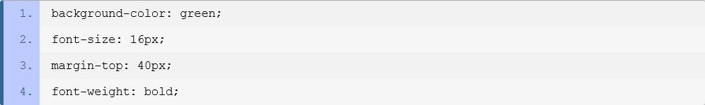
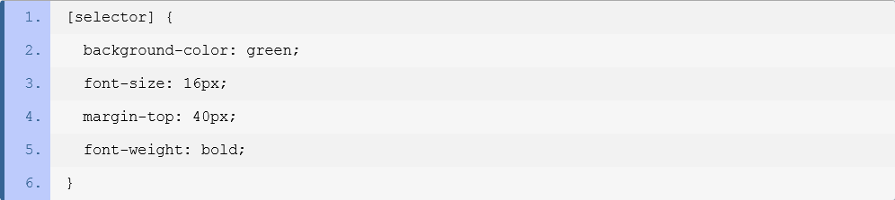
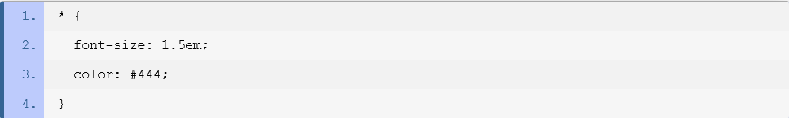
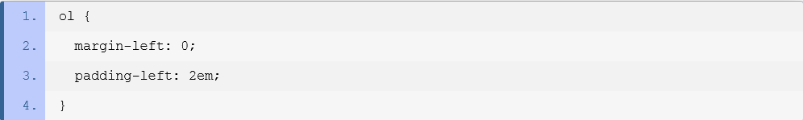
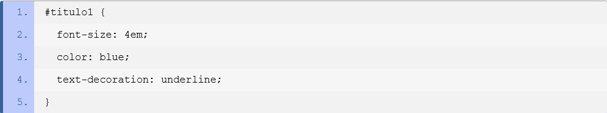
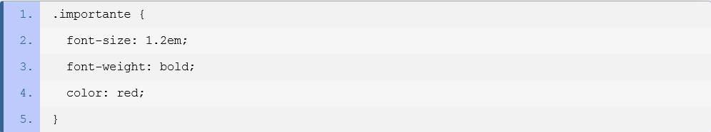
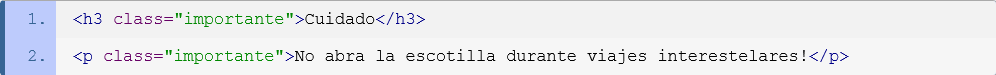

Hojas de estilo en cascada (CSS)
Este tutorial está pensado para presentar el concepto y la utilización básica de CSS. En sus páginas, intentaré cubrir los aspectos básicos de las hojas de estilo, lo que te permitirá continuar aprendiendo con recursos más específicos.Concepto
CSS es un estándar diseñado principalmente para separar los atributos presentacionales (como el color de fondo, el tamaño de la fuente o la sangría) del contenido. Aunque éste puede trabajar con muchos tipos de documentos, es mayormente utilizado como una forma de proveer información presentacional en páginas web.
La separación entre contenido y presentación mejora la flexibilidad, permitiendo a los autores definir un único conjunto de estilos que miles de documentos utilizarán, reduciendo así el tiempo y trabajo que se debe invertir en cada actualización. Asimismo, la implementación de CSS permite a un documento ser exclusivamente semántico, al liberarlo de la necesidad de usar elementos presentacionales.
Declaraciones, propiedades y valores
La declaración es la unidad básica de CSS, lo que significa que no puedes usar nada más pequeño que esto en tus documentos. Una declaración consiste, básicamente, en la asignación de un valor a una propiedad.
En otras palabras, una declaración es la respuesta a una pregunta. ¿Qué tan ancho debería ser esta tabla? ¿Cuán grueso este borde? ¿De qué color debería ser este fondo? ¿Qué tan grande la fuente en este párrafo? Y es exactamente así cómo defines el aspecto de tu documento: estableciendo declaraciones, una para cada propiedad que necesitas definir.
Pero CSS tiene un formato específico que debe seguir toda declaración. Éste consiste en el nombre de la propiedad seguido de dos puntos (":") y el valor que le será asignado. Cuando se provee más de una declaración en el mismo bloque, cada declaración debe ser separada de su próxima por un punto y coma (";"). Este es el motivo por el cual los autores normalmente usan un punto y coma al final de cada declaración, independientemente de la presencia de declaraciones siguientes. El próximo esquema describe las partes de una declaración CSS.
color: red;
En el siguiente ejemplo, un conjunto de declaraciones son presentadas utilizando este formato. Aquí un quiebre de línea adicional es agregado al final de cada declaración, a fin de mejorar la legibilidad.
Selectores
Con lo visto hasta el momento podemos construir declaraciones, pero ¿cómo indicamos qué elementos en el documento deben ser afectados por éstas? Aquí es donde los selectores CSS entran en la escena. Un selector es el medio para hacer una referencia a un grupo de uno o más elementos HTML, con el fin de aplicar a éste un conjunto de declaraciones CSS.
Existe una estructura con la que debes cumplir para usar un selector y está compuesta por el selector seguido del conjunto de declaraciones encerradas por llaves ("{}"). El siguiente ejemplo, en el cual espacios y quiebres de línea han sido agregados para mejorar la legibilidad, refleja esta estructura.
Existe un amplio conjunto de selectores disponibles, lo que se traduce en una flexibilidad excepcional para la manipulación de propiedades. En las secciones siguientes, veremos algunos de los selectores más básicos, ya que éstos presentarán las ideas sobre las cuales otros selectores se constituirán.
El selector universal
El selector universal se corresponde con todos los elementos en el documento. Éste es como una especie de comodín que tiene más sentido al ser usado en combinaciones. El siguiente código establece un par de propiedades para todos los elementos en el documento.
Selectores de tipo
El selector de tipo se corresponde con todos los elementos en el documento que tienen el tipo especificado. Con este selector puedes aplicar declaraciones a, por ejemplo, todos los párrafos (elementos p), todos los ítems de listas (elemento li) o todos los vínculos (elementos a) de un documento. El siguiente ejemplo provee declaraciones para todas las listas ordenadas (elementos ol) del documento.
Selectores de ID
El selector de ID se corresponde con todos los elementos que tienen el valor especificado en su atributo id. Como, por definición, los valores de id deben ser únicos, este selector puede afectar sólo a un elemento en el documento. En su declaración, el ID especificado debe estar precedido por el signo numeral ("#").
El siguiente ejemplo muestra un conjunto de declaraciones que están siendo aplicadas a un elemento que tiene el valor "titulo1" en el atributo id.
Selectores de clase
Una clase es un concepto introducido por CSS con el propósito de agrupar declaraciones y aplicarlas a un conjunto personalizado de elementos, independientemente de su tipo o naturaleza. Desde otro punto de vista, una clase es una o más declaraciones CSS, agrupadas bajo un nombre que los elementos pueden utilizar para acceder a sus definiciones y ser afectados por ellas.
Dicho esto, un selector de clase aplica un conjunto de delcaraciones a todos los elementos que tienen el nombre de clase especificado en su atributo class. En su construcción, un punto (".") debe preceder al nombre de la clase. El siguiente ejemplo muestra un conjunto de declaraciones para la clase llamada "importante".
Y estas declaraciones afectarían a elementos como los siguientes.
